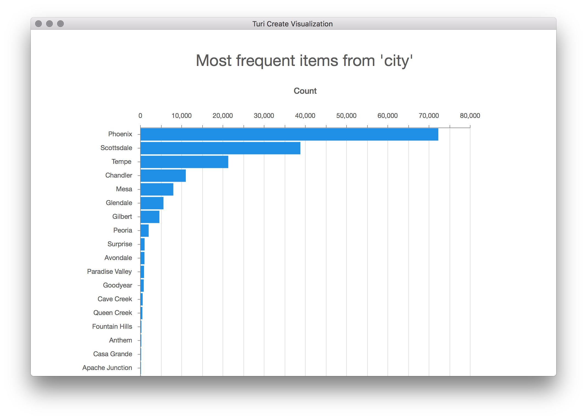

Linear Regression
Turi Create's linear regression module is used to predict a continuous target as a linear function of features. This is a two-stage process, analogous to many other Turi toolkits. First a model is created using training data. Once the model is created, it can then be used to make predictions on new examples that were not seen in training (the test data). Model creation, prediction, and evaluation work will data that is contained in an SFrame. The following figure illustrates how linear regression works. Notice that the functional form learned here is a linear function (unlike the previous figure where the predicted function was non-linear).
Background
Given a set of features , and a label (where denotes a single example in the training data), linear regression assumes that the target is a linear combination of the features
i.e where is random Gaussian noise with mean and variance . An intercept term is added by appending a column of 1's to the features. Regularization is often required to prevent over-fitting by penalizing models with extreme parameter values. The linear regression module supports L1 and L2 regularization, which are added to the loss function.
The composite objective being optimized for is the following:
where is the l1_penalty and is the l2_penalty.
Introductory Example
Suppose we have a dataset containing restaurant reviews. The task is to predict the 'star rating' for a restaurant for a given user.
We will first split the data into a train-test split and then create a linear regression model that can predict the star rating for each review using:
- Average rating of a given business
- Average rating made by a user
- Number of reviews made by a user
- Number of reviews that concern a business
import turicreate as tc
# Load the data
data = tc.SFrame('ratings-data.csv')
# Make a train-test split
train_data, test_data = data.random_split(0.8)
# Create a model.
model = tc.linear_regression.create(train_data, target='stars',
features = ['user_avg_stars',
'business_avg_stars',
'user_review_count',
'business_review_count'])
# Save predictions to an SFrame (class and corresponding class-probabilities)
predictions = model.predict(test_data)
# Evaluate the model and save the results into a dictionary
results = model.evaluate(test_data)Additional Features
We will now go over some more advanced options with the linear regression module. This includes regularization, evaluation options, model interpretation, and missing value handling. Note that logistic regression and support vector machines (SVM) conform to almost all of the API discussed below.
Accessing attributes of the model
The attributes of all Turi Create models, which include training statistics, model hyper-parameters, and model results can be accessed in the same way as python dictionaries.
Interpreting results
Linear regression can provide valuable insight about the relationships between the target and feature columns in your data, revealing why your model returns the predictions that it does. The coefficients () are what the training procedure learns. Each model coefficient describes the expected change in the target variable associated with a unit change in the feature. The bias term indicates the "inherent" or "average" target value if all feature values were set to zero.
The coefficients often tell an interesting story of how much each feature matters in predicting target values. The magnitude (absolute value) of the coefficient for each feature indicates the strength of the feature's association to the target variable, holding all other features constant. The sign on the coefficient (positive or negative) gives the direction of the association.
When a Turi Create regression model is trained, the model.summary() output
shows the largest positive and negative coefficients. After a model is
created, we can access the coefficients as follows:
coefs = model.coefficients
print(coefs)+-----------------------+-------+-------------------+-------------------+
| name | index | value | stderr |
+-----------------------+-------+-------------------+-------------------+
| (intercept) | None | -2.22993154648 | 0.0199750718984 |
| user_avg_stars | None | 0.809669227421 | 0.00414406824672 |
| business_avg_stars | None | 0.781099022798 | 0.00419064940637 |
| user_review_count | None | 1.85023282568e-05 | 1.15481783547e-05 |
| business_review_count | None | 7.06842770902e-05 | 1.72332966093e-05 |
+-----------------------+-------+-------------------+-------------------+
[5 rows x 3 columns]Note that the index column in the coefficients is only applicable for
categorical features, lists, and dictionaries. In the SFrame above, there is an
extra column for standard errors on the estimated coefficients (see section
below for a more detailed explanation).
Standard-errors
The standard error is the empirical standard deviation on the estimated
coefficient. For example, a coefficient of 1 with a standard error of 0.5
implies a standard deviation of 0.5 on the estimated values of the
coefficients. Standard errors capture the confidence we have in the
coefficients estimated during model creation. Smaller standard errors implies
more confidence in the value of the coefficients returned by th model.
Standard errors on coefficients are only available when solver=newton or
when the default auto solver option chooses the newton method and if the
number of examples in the training data is more than the number of
coefficients. If standard errors cannot be estimated, a column of None values
are returned.
Categorical features
Categorical variables are features that can take one of a limited, and usually fixed, number of possible values. Each category is referred to as a level. As an example, consider the variable city that a given restaurant is in. This dataset has about 60 unique strings for the city (the number of unique values in the output of Turi Canvas is approximate).
city = train_data['city']
city.show()
The regression module in Turi Create uses simple encoding while creating models using string features. Simple encoding compares each category to an arbitrary reference category (we choose the first category of the data as the reference). In other words, we add dummy coefficients to encode each category. The number of these dummy coefficients is equal to the total number of categories minus 1 (for the reference category). The following figure illustrates how categorical variables are encoded using the simple encoding scheme.
{kind=link}
Now let us look at a simple example of using city as a variable in the linear regression model. Notice that there is no need to do any special pre-processing. All SFrame columns of type str are automatically transformed into categorical variables. Notice that the number of coefficients and the number of features aren't the same.
In this example, there are 60 unique cities, so 59 dummy coefficients. Turi Create can handle categorical variables with millions of categories.
# Create a model with categorical features.
model = tc.linear_regression.create(train_data, target='stars',
features = ['user_avg_stars',
'business_avg_stars',
'user_review_count',
'business_review_count',
'city'])
# Number of feature columns
print("Number of features : %s" % model['num_features'])
# Number of features (including expanded lists and dictionaries)
print("Number of unpacked features : %s" % model['num_unpacked_features'])
# Number of coefficients in the model
print("Number of coefficients : %s" % model['num_coefficients'])
# A coefficient is included for each category
print(model['coefficients'])Number of features : 5
Number of unpacked features : 5
Number of coefficients : 64
+-----------------------+------------+-------------------+
| name | index | value |
+-----------------------+------------+-------------------+
| (intercept) | None | -2.23521785747 |
| user_avg_stars | None | 0.812827992012 |
| business_avg_stars | None | 0.778447236096 |
| user_review_count | None | 2.48618619187e-05 |
| business_review_count | None | 0.000102740183746 |
| city | Tempe | -0.0214425060978 |
| city | Scottsdale | -0.00858553630484 |
| city | Mesa | 0.0109508448699 |
| city | Chandler | 0.0390579171569 |
| city | Gilbert | -0.00525039510189 |
| ... | ... | ... |
+-----------------------+------------+-------------------+
[64 rows x 3 columns]
Note: Only the head of the SFrame is printed.
You can use print_rows(num_rows=m, num_columns=n) to print more rows and columns.
Sparse features
Sparsity is one of the most important things to consider when working with a lot of data. Sparse features are encoded using a dictionary where the keys represent the feature names and the values are the feature values. A coefficient is added for each key in the union of the set of keys for all dictionaries across all examples. For a particular example, only non-zero values need to be stored in the dictionary. The following illustration describes how Turi Create dictionary features leverage sparsity in your data.

Often, the sparse representation using dictionaries is much more efficient than using the dense representation.
Reviews contain useful tags that describe each business. Unlike categorical variables, a business may have several tags. These tags are stored using dictionaries. Not all tags are associated with every restaurant, so we will only store those tags that are associated with restaurant and assume that all tags not explicitly provided are treated as features with value zero. We illustrate with the following example:
print(train_data['categories_dict'].head(3))[{'Breakfast & Brunch': 1, 'Restaurants': 1},
{'Restaurants': 1, 'Pizza': 1, 'Italian': 1},
{'Dog Parks': 1, 'Parks': 1, 'Active Life': 1}]We can now create a linear regression model with categories_dict included in the feature list. A coefficient is added for each key encountered in the input data. If the test data contains keys that were not present during training, they are silently ignored.
# Create a model with dictionary features.
model = tc.linear_regression.create(train_data, target='stars',
features = ['user_avg_stars',
'business_avg_stars',
'user_review_count',
'business_review_count',
'categories_dict'])
# Number of feature columns
print("Number of features : %s" % model['num_features'])
# Number of features (including expanded lists and dictionaries)
print("Number of unpacked features : %s" % model['num_unpacked_features'])
# Number of coefficients in the model
print("Number of coefficients : %s" % model['num_coefficients'])
# A coefficient is included for each key in the dictionary
print(model['coefficients'])Number of features : 5
Number of unpacked features : 511
Number of coefficients : 512
+-----------------------+--------------------+--------------------+
| name | index | value |
+-----------------------+--------------------+--------------------+
| (intercept) | None | 0.872679609626 |
| user_avg_stars | None | 0.415478142682 |
| business_avg_stars | None | 0.363118585079 |
| user_review_count | None | -1.13051967735e-05 |
| business_review_count | None | 0.000205358202417 |
| categories_dict | Breakfast & Brunch | -0.120010958039 |
| categories_dict | Restaurants | 0.271655570815 |
| categories_dict | Middle Eastern | -0.229361372902 |
| categories_dict | Dog Parks | -0.509799508435 |
| categories_dict | Parks | -0.0565527745702 |
| ... | ... | ... |
+-----------------------+--------------------+--------------------+
[512 rows x 3 columns]
Note: Only the head of the SFrame is printed.
You can use print_rows(num_rows=m, num_columns=n) to print more rows and columns.List features
Turi Create can also handle list of numerical values as features without preprocessing. The following illustration shows that the numeric-list feature is equivalent to adding several columns for each individual feature. This is especially useful for image data where the number of features generated are large and may not have natural interpretations. The following figure illustrates this idea.
{kind=link}
As an example, we convert the votes (which stores the number of cool, funny, and useful votes for each review) column into a list of features for each vote type.
from array import array
# List of features
train_data['votes_list'] = train_data['votes'].apply(lambda x: x.values())
print(train_data['votes_list'].head(3))[array('d', [0.0, 5.0, 2.0]),
array('d', [0.0, 0.0, 0.0]),
array('d', [0.0, 2.0, 1.0])]Notice that the SArray of numeric lists must be of dtype array and the
array in each row must be of the same length. The astype() function of
the SArray can help convert your data from type array to list.
# Create a model with numeric-list features.
model = tc.linear_regression.create(train_data, target='stars',
features = ['user_avg_stars',
'business_avg_stars',
'user_review_count',
'business_review_count',
'votes_list'])
# Number of feature columns
print("Number of features : %s" % model['num_features'])
# Number of features (including expanded lists and dictionaries)
print("Number of unpacked features : %s" % model['num_unpacked_features'])
# Number of coefficients in the model
print("Number of coefficients : %s" % model['num_coefficients'])
# A coefficient is included for each index in the list
print(model['coefficients'])Number of features : 5
Number of unpacked features : 7
Number of coefficients : 8
+-----------------------+-------+-------------------+
| name | index | value |
+-----------------------+-------+-------------------+
| (intercept) | None | -2.02163219079 |
| user_avg_stars | None | 0.792122828319 |
| business_avg_stars | None | 0.756871316569 |
| user_review_count | None | 3.46394815858e-06 |
| business_review_count | None | 7.55781795366e-05 |
| votes_list | 0 | -0.0919094290658 |
| votes_list | 1 | -0.113808771262 |
| votes_list | 2 | 0.201216924886 |
+-----------------------+-------+-------------------+
[8 rows x 3 columns]Feature rescaling
Feature rescaling is the process of scaling individual features to be of the
same scale. This process is particularly useful when features vary widely in
their ranges. It is well known that feature rescaling can make an enormous
impact on accuracy. By default, Turi Create rescales all the features to
make sure that they have the same L2-norm. The data is not centered to
make each column of mean zero. Categorical features, lists, and sparse
features (dictionaries), are also rescaled columnwise. The feature rescaling
can be disabled (only recommended for advanced users) by setting
feature_rescaling = False. The coefficients are scaled back to the
original scale of the problem.
model = tc.linear_regression.create(train_data, target='stars',
features = ['user_avg_stars',
'business_avg_stars',
'user_review_count',
'business_review_count'],
feature_rescaling = False)Choosing the solver
The optimization used to create the model is automatically picked based on the input data from a carefully engineered collection
of methods. The newton
method works best for datasets with plenty of examples and few features (long
datasets). Limited memory BFGS (lbfgs) is a robust solver for wide datasets
(i.e datasets with many coefficients). fista is the default solver for
L1-regularized linear regression. Gradient-descent (GD) is another well tuned
method that can work really well on L1-regularized problems. The solvers are
all automatically tuned and the default options should function well.
Solver options can, however, be changed. In this example, we will increase
max_iterations to 20 iterations. This is useful when
model['solver_status'] is TERMINATED: Iteration limit reached and the
accuracy of the model is not at a desired level.
# Provide solver options in a dictionary
model = tc.linear_regression.create(train_data, target='stars',
features = ['user_id',
'business_id',
'user_avg_stars',
'business_avg_stars'],
solver = 'lbfgs',
max_iterations = 20)What happens when the default solver fails?
Whenever you have convergence trouble and the number of features is < 5000, then
solver=newton is a good choice. The Newton method is one of the most
stable optimization methods and works quite well if you have few coefficients.
The downside of the Newton method is its large computational complexity per-
iteration.
Solver options guide
Most solvers are all automatically tuned and the default options should function well. Changing the default settings may help in some cases.
step_size: The starting step size to use for thefistaandgdsolvers. The default is set to 1.0, this is an aggressive setting. If the first iteration is taking a considerable amount of time, then reducing the step size may speed up model training. If the step size of 1.0 is accepted in the first iteration, then consider increasing this step size to a more aggressive value.
max_iterations: The maximum number of passes through the data allowed. Increasing his can result in a more accurately trained model. Consider increasing this (the default value is 10) if the training accuracy is low and the Grad-Norm in the display is large.
convergence_threshold: Convergence is tested using variation in the training objective. The variation in the training objective is calculated by dividing the difference between the objective values between two steps. Consider reducing this below the default value (0.01) for a better training data fit. Beware of overfitting (i.e a model that works well only on the training data) if this parameter is set to a very low value.
lbfgs_memory_level: The L-BFGS algorithm keeps track of gradient information from the previouslbfgs_memory_leveliterations. The storage requirement for each of these gradients is thenum_coefficientsin the problem. Increasing thelbfgs_memory_levelcan help improve the quality of the model trained at the cost of more memory. Setting this to more thanmax_iterationshas the same effect as setting it tomax_iterations.
Making predictions with missing data
Once the model is created and ready to make predictions, it is quite common that the input data to make predictions on are noisy. Turi Create can recognize the following types of missing data (stored as None). Note that the following options only apply to missing values during prediction or evaluation. Missing values during model creation raise an error.
- Missing values in individual features: Individual features including
numerical, categorical, list of numeric, and dictionary features may contain
missing data. The option
missing_value_actiondetermines the way in which these features are handled. The default value value ismissing_value_action='impute'which imputes each of the features to the mean value observed during training. Settingmissing_value_action='error'throws an error if any missing values are encountered during prediction.
- Missing feature columns: Sometimes, an entire column is missing while
making predictions. In this case,
missing_value_action='impute'imputes the mean value observed during training for each row in the input data. Again, settingmissing_value_action='error'throws an error if an entire feature column is missing during prediction.
- New categories in categorical features: New categories are often observed during predict time. These new categories are treated to be the same as the reference category thus having no effect on the model prediction.
- New keys in dictionary features: New keys in dictionary features during predict time are silently ignored and do not effect the prediction made.
# Create a model with categorical and dictionary features.
model = tc.linear_regression.create(train_data, target='stars',
features = ['user_avg_stars',
'business_avg_stars',
'user_review_count',
'business_review_count',
'city',
'categories_dict'])
# An SFrame with a single row with missing values in the 'user_avg_stars'
# predict() will impute the entire feature to the mean value observed during training
new_data = tc.SFrame({'user_avg_stars': [None],
'business_avg_stars': [30.0],
'user_review_count': [10],
'business_review_count': [20],
'city': ['Tuscon'],
'categories_dict': [{'Pizza': 1}]
})
prediction = model.predict(new_data)
print(prediction)
# An SFrame without the 'user_avg_stars' feature. predict() will impute the
# entire feature to the mean value observed during training.
new_data = tc.SFrame({'business_avg_stars': [30.0],
'user_review_count': [10],
'business_review_count': [20],
'city': ['Tuscon'],
'categories_dict': [{'Pizza': 1}]
})
prediction = model.predict(new_data)Regularizing Models (Lasso, Ridge, and Elastic Net regression)
Regularization is the process of using problem structure to solve ill-posed problems or to prevent overfitting. The structure is imposed by adding a penalty term to the objective function. The linear regression module supports L1 and L2 regularization, which are added to the loss function.
As discussed above, the composite objective being optimized for is the following:
where is the l1_penalty and is the l2_penalty.
# Lasso
model = tc.linear_regression.create(train_data, target='stars',
features = ['user_avg_stars',
'business_avg_stars',
'user_review_count',
'business_review_count'],
l1_penalty = 1.0,
l2_penalty = 0.0)
# Ridge regression
model = tc.linear_regression.create(train_data, target='stars',
features = ['user_avg_stars',
'business_avg_stars',
'user_review_count',
'business_review_count'],
l2_penalty = 1.0)
# Elastic net regression
model = tc.linear_regression.create(train_data, target='stars',
features = ['user_avg_stars',
'business_avg_stars',
'user_review_count',
'business_review_count'],
l1_penalty = 1.0,
l2_penalty = 1.0)